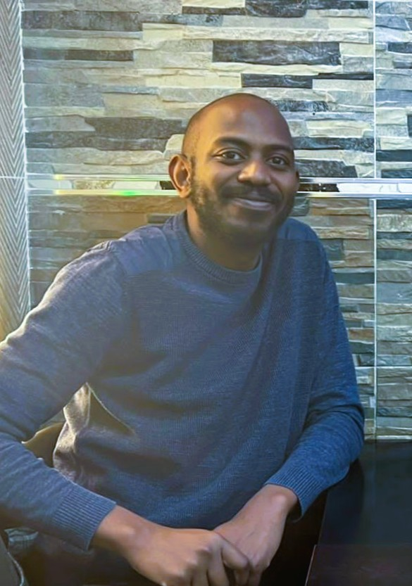
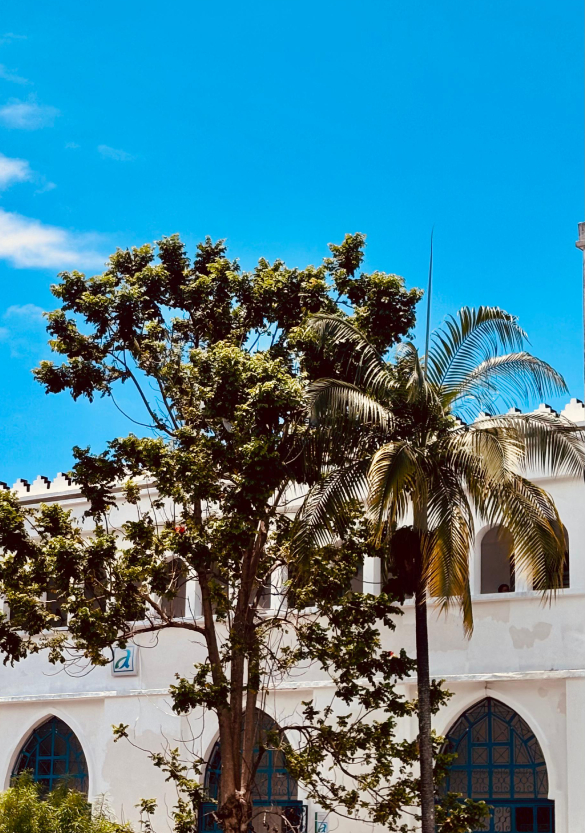
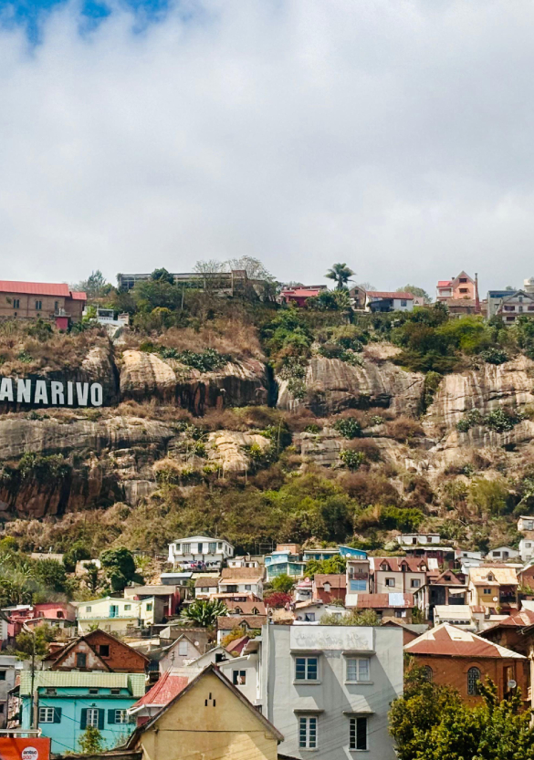

Since September 2025, I have been an associate professor at UPVD: teaching in the Data Science Department (IUT de Perpignan) and a member of the LAMPS team. Before that, I was a postdoctoral fellow in Statistics at the Université du Québec à Montréal, working with Cédric Beaulac and Marie-Hélène Descary, from July 2024 to August 2025. I got my Ph.D. in Applied Mathematics (concentration in statistical sciences) at the University of Lille in December 2023 under the supervision of Cristian Preda and Sophie Dabo-Niang.
My research interests mainly focus on functional data analysis (FDA), shape analysis, and spatial statistics. In FDA, I'm particularly interested in studying multivariate functional variables for supervised and unsupervised purposes.


Former supervisions
New